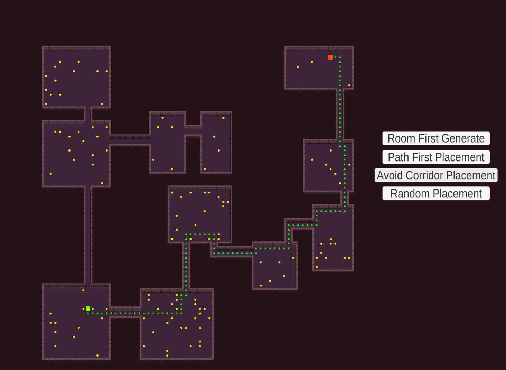
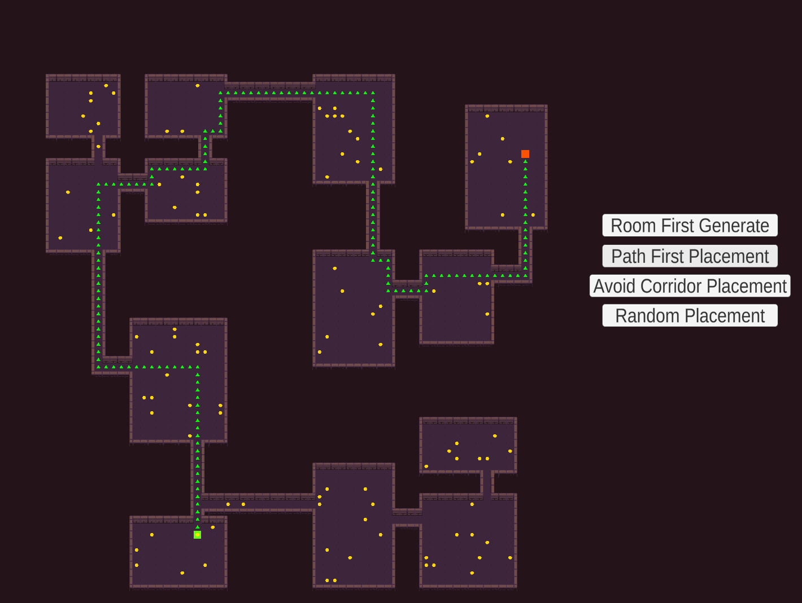
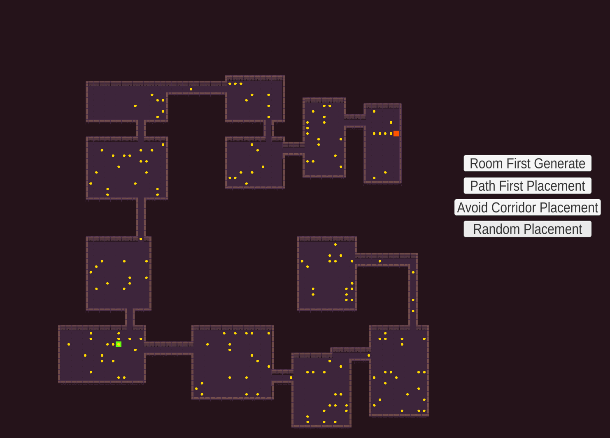

Procedural asset spawning (Dissertation Artefact) - Unity



“Procedural asset placement algorithms, created to aid the population of a procedurally generated dungeon”
Project Links:
- Link to Dissertation PDF
- Project’s GitHub repository: https://github.com/JoeOrchard03/Procedural-asset-spawning-artifact
Overview:
This was the dissertation artefact that I made to gather data for my dissertation paper for my third year of university, my paper’s aim was to investigate how to procedurally populate procedurally generated spaces with assets, the goal being making these spaces feel fuller and more alive, the artefact was an attempt to make a tool that others, mainly solo developers or small indie teams, could add to their toolkits to help hasten level development. To do this this artefact was created that generates a dungeon level and populates it with assets using three different asset placement functions: path first placement, corridor considered placement and random placement. Utilizing an A* pathfinding agent to test each generated iteration.
Key Features:
- Level Generation: Utilizes the binary space partitioning algorithm to split the generator space into rooms of various shapes and sizes.
- A* pathfinding for testing each iteration: A* pathfinding runs from the entrance of the dungeon to the end, it will succeed if it it can find a successful path, marking the path with green triangles, it will fail if there are assets blocking the paths.
- Path first placement: Finds a path using the A* pathfinding after the level is generated, these tiles are marked so assets will not be placed on them.
- Corridor considered: Marks all corridor tiles after level generation so assets are not placed on them.
- Random: Places assets randomly, often failed.